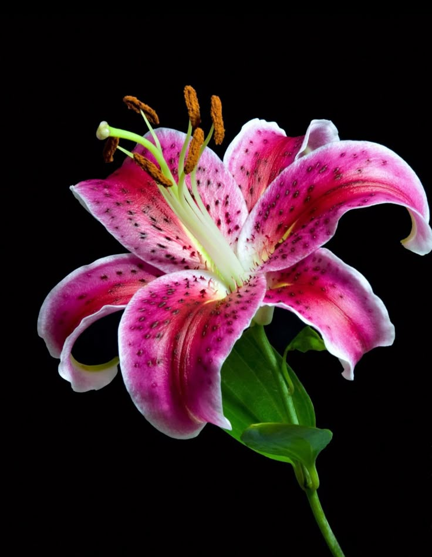

ABOUT US
Flowerism is a digital garden dedicated to the world's most unique and rare wildflowers. Here, we celebrate the beauty, mystery, and diversity of blooms that grow in hidden corners of the planet. From the deep rainforests to the windswept mountaintops, wildflowers tell stories of nature's creativity.
Explore their colors, learn their names, and fall in love with the petals that paint our Earth. Whether you're a flower enthusiast, a curious wanderer, or a nature lover — there's something here for you.